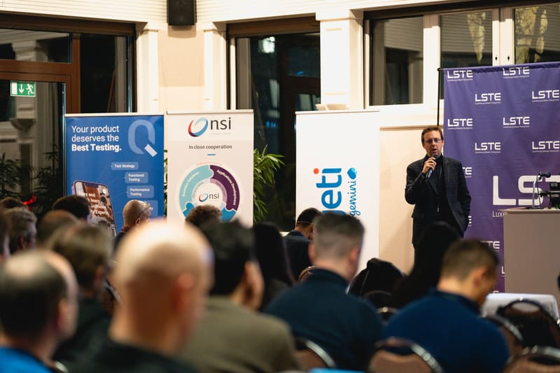
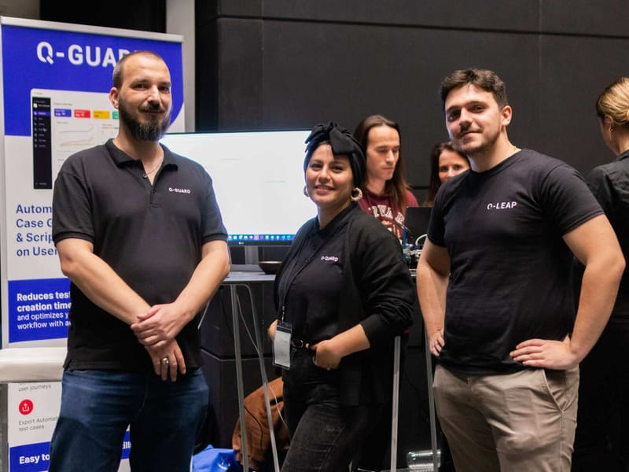

19 November 2025
Since 2014, LSTE has brought together software testing and Quality Assurance professionals from Luxembourg, France, Belgium and Germany to share knowledge, exchange best practices and explore the latest trends in software quality. The event combines expert talks, practical sessions and meaningful networking in one focused day.

Every year, the entire community of testers and IT practitioners join this event. An event to get valuable insights about testing practices from experts that help enhancing everyday tasks.
Over the years, this conference has gained a reputation of being one of the key and most awaited events on Luxembourg's IT agenda.
The success of the Luxembourg Software Testing Event is due to the dedicated involvement of Q-LEAP. The company is the primary and actual organizer. The Software Quality company has contributed to the conference's Concept and Character.
The success of the Luxembourg Software Testing Event is due to the dedicated involvement of Q-LEAP. The company is the primary and actual organizer. The Software Quality company has contributed to the conference's Concept and Character.
Visit Q-Leap.eu
The Q-Leap team on site at LSTE 2024.
19 November 2025

19 November 2025

11 December 2024

11 December 2024